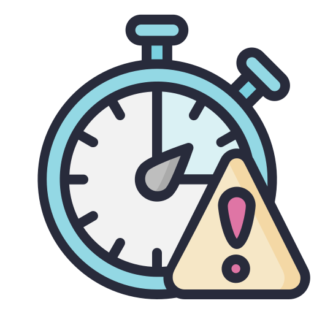
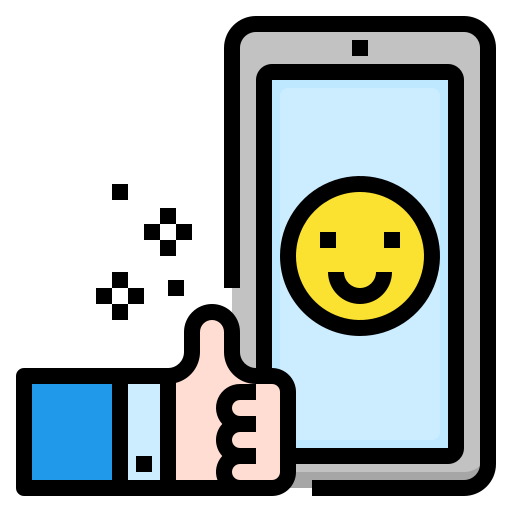

-

LIMITE DE TEMPO
Definir horários para o uso de telas evita exposição excessiva, equilibrando as atividades diárias e preservando a saúde física e mental. Com limites, aproveitamos melhor o tempo e evitamos que a tecnologia prejudique o bem-estar.
-
FAÇA PAUSAS
Fazer pausas enquanto usa telas é importante para evitar cansaço nos olhos, problemas de postura e estresse. A regra 20-20-20 ajuda: a cada 20 minutos de uso e olhe para algo distante por 20 segundos. Essa pequena mudança ajudam a reduzir o desconforto e a melhorar a saúde.
-

CONTEÚDO DE QUALIDADE
Consumir conteúdo de qualidade na internet é importante para aprender de forma construtiva e evitar desinformação. Escolher o que assistir ou ler com cuidado ajuda a enriquecer nosso conhecimento. Isso faz toda a diferença no nosso crescimento pessoal e profissional.
-

ESTUDAR COM AS TELAS
Estudar com as telas é ótimo pela variedade de conteúdo e pela facilidade de acessar diferentes fontes. Além disso, recursos interativos e vídeos podem tornar o aprendizado mais interessante e fácil de entender.
Referência Conheça 12 maneiras de diminuir o tempo de uso do celular e 5 dicas para ajudar a equilibrar o tempo de tela e o aprendizado
Saiba se o seu tempo de tela diário está dentro do recomendado
Referência: USO DE TELAS POR CRIANÇAS E ADOLESCENTES